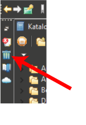

). Check this option, if you want the trashcan items to be sorted by name. Otherwise they are sorted by deletion date.
). Check this option, if you want the trashcan items to be sorted by name. Otherwise they are sorted by deletion date.The Trashcan contains deleted catalog entries and images that are scheduled for deletion. These images will be moved to the platforms waste basket at the end of the session or until the Trashcan is explicitly emptied. Trashcan items can be restored.
The Trashcan can be opened by clicking on the trashcan item in the Fast view bar (top left in the window border). To close the Trashcan click elsewhere. Alternatively, the Trashcan can be opened via Window>Show view>Management>Trashcan.

The size of the trashcan thumbnails can be adjusted with the slider in the title bar of the trashcan view. Alternatively, the mouse wheel can be used.
). Check this option, if you want the trashcan items to be sorted by name. Otherwise they are sorted by deletion date.